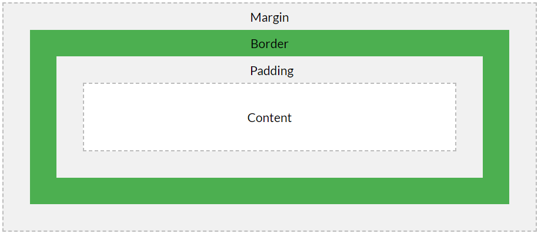

The width and height properties set the width and height of the content box, which is the area in which the content of the box is displayed — this content includes both text content inside the box, and other boxes representing nested child elements.
Padding refers to the inner margin of a CSS box — between the outer edge of the content box and the inner edge of the border.
The border of a CSS box sits between the outer edge of the padding and the inner edge of the margin. By default the border has a size of 0 — making it invisible — but you can set the thickness, style and color of the border to make it appear.
The margin surrounds a CSS box, and pushes up against other CSS boxes in the layout. It behaves rather like padding, but extending from the outer edge of the border.
